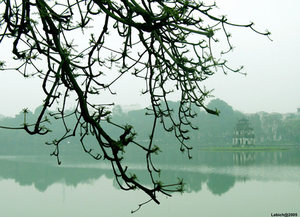
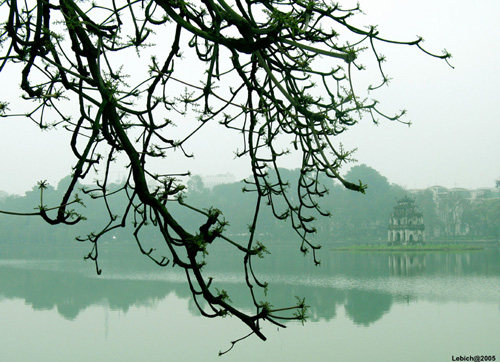

Hồ Gươm là một cái tên không xa lạ với người Việt Nam. Cái tên của Hồ Gươm có từ truyền thuyết vua Lê Thái Tổ được Rùa Vàng cho mượn Gươm đuổi đánh quân Minh. Sau đó khi vua đi thuyền trên hồ Thủy Quân thì Rùa Vàng nổi lên gọi nhà vua để hoàn kiếm cho Long Vương, từ đó hồ có tên là Hồ Gươm. hay Hồ Hoàn Kiếm.
Tuy không phải là hồ lớn nhất trong thủ đô Hà Nội, song hồ Gươm đã gắn liền với cuộc sống và tâm tư của nhiều người dân Hà Nội. Với cảnh đẹp tuyệt vời Hồ Gươm thường là cảm hứng sáng tác của các văn nghệ sĩ từ khắp nơi.
 
